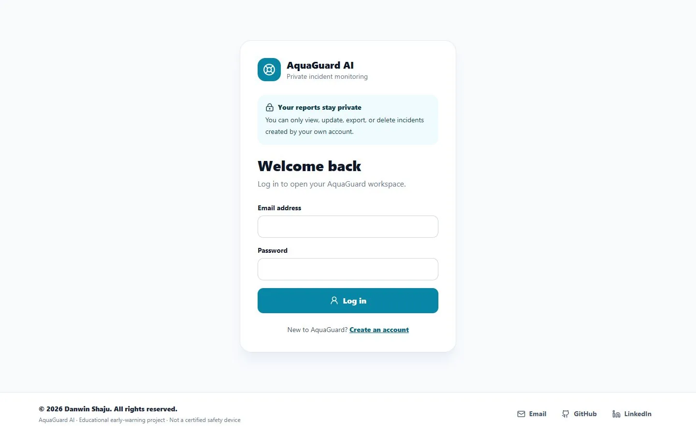

Case Study · Full-Stack AI
AquaGuard AI
A privacy-focused educational early-warning platform that analyzes pool video, tracks people, estimates behavioral risk over time, and organizes incident evidence for review.
01 · Overview
From video to an explainable safety signal.
Pool monitoring creates a difficult engineering problem: individual frames rarely provide enough context, while raw detections alone cannot explain whether behavior is becoming risky.
AquaGuard combines detection, tracking, movement history, pose signals, and time-based risk evaluation. The result is a review workflow that highlights possible incidents while keeping the human operator responsible for verification and response.
02 · Interface
Private by design.
The first screen establishes account ownership before users can access cameras, reports, incidents, or evidence.

03 · Architecture
One connected processing pipeline.
Typed frontend requests move through secure APIs into processing services, computer-vision modules, and private persistence.
→
→
→
→
04 · Product capabilities
More than object detection.
Camera monitoring
Browser-camera and persistent RTSP/HTTP sources with selectable speed and accuracy profiles.
People and pose signals
YOLO detection, identity tracking, movement history, pool zones, and pose-based behavioral signals.
Temporal evaluation
Multiple independent signals are smoothed over time before a possible danger status is raised.
Owner-isolated evidence
Accounts can access only their own cameras, incidents, snapshots, clips, notes, and reports.
Incident workflow
Searchable notes, acknowledgement, resolution, false-alarm handling, CSV export, and printable reports.
Automatic cleanup
Incident evidence expires after 24 hours by default to reduce unnecessary storage of sensitive media.
05 · Engineering decisions
Challenges solved deliberately.
01
Real-time work on limited hardware
Solution: Adjustable inference modes, frame sampling, browser backpressure, and reusable tracking state balance responsiveness with CPU cost.
02
Avoiding single-frame conclusions
Solution: Independent behavioral signals, score smoothing, and a continuous three-second verification window add temporal context before a danger state.
03
Protecting incident evidence
Solution: Account ownership is enforced for incidents and cameras, while scheduled cleanup removes expired snapshots, clips, and database records.
04
Reliable video playback in browsers
Solution: Processed outputs are encoded to H.264 with yuv420p and fast-start metadata for consistent Chrome and Edge playback.
06 · Outcome
A complete, reviewable workflow.
The project connects secure accounts, video ingestion, computer vision, live status updates, evidence creation, reporting, and retention into one full-stack application. It demonstrates system design across frontend, backend, data, security, and AI boundaries.
07 · Technology stack
Built across the full stack.
React.jsTypeScriptViteFastAPIPythonMongoDBYOLOByteTrackWebSocketsOpenCVFFmpegDockerGitHub
08 · Current limitations
Clear boundaries matter.
- Educational prototype, not a certified safety device.
- Must never replace trained lifeguards, supervision, barriers, alarms, or emergency procedures.
- Real-time performance depends on available CPU or GPU resources.
- Independent evaluation still requires real, safety-reviewed pool footage and labels.
09 · Next steps
Roadmap.
- Create a recorded-dataset labeling workflow.
- Publish independent precision, recall, and false-alert evaluation.
- Move background processing to a durable worker queue.
- Prepare a secure cloud deployment and monitored alert delivery.
Explore the build